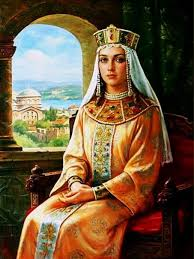
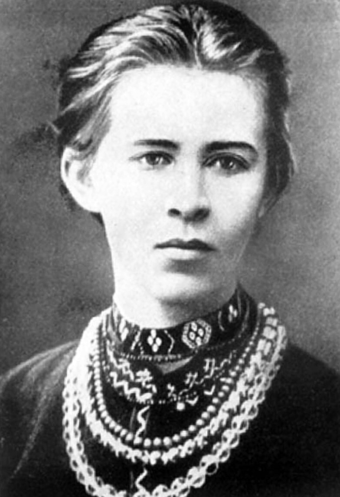

Анна Ярославна - княгиня Київська, дружина Французького короля Генріха І.

Леся Українка - визначний український поет, письменниця, громадський діяч.
Анна Ярославна - княгиня Київська, дружина Французького короля Генріха І.
Леся Українка - визначний український поет, письменниця, громадський діяч.
Катерина Білокур - відома українська художниця, майстриня народного мистецтва.
Соломія Крушельницька - видатна українська оперна співачка.
Ольга Кобилянська - видатна українська письменниця, авторка романів і оповідань.
Марія Заньковецька - видатна українська актриса, одна з основоположників українського театру.